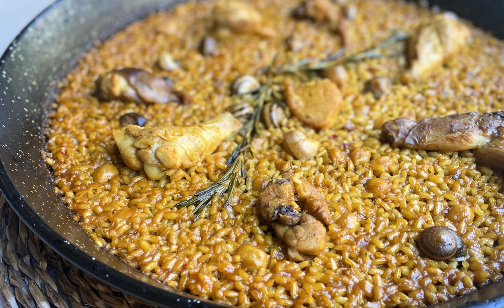
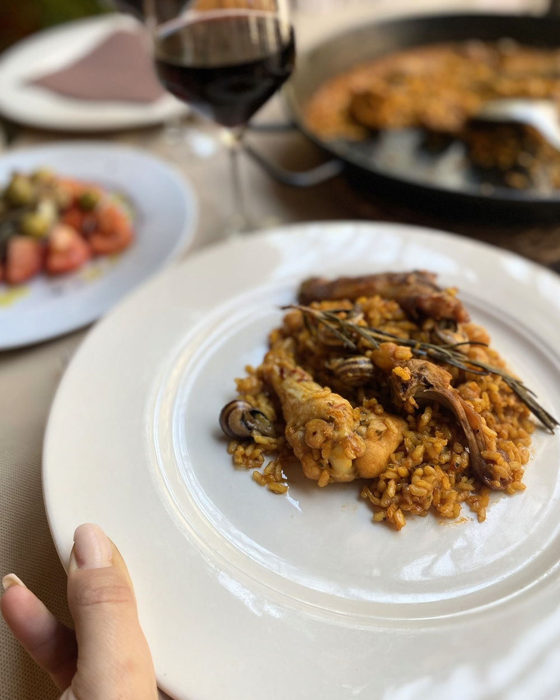
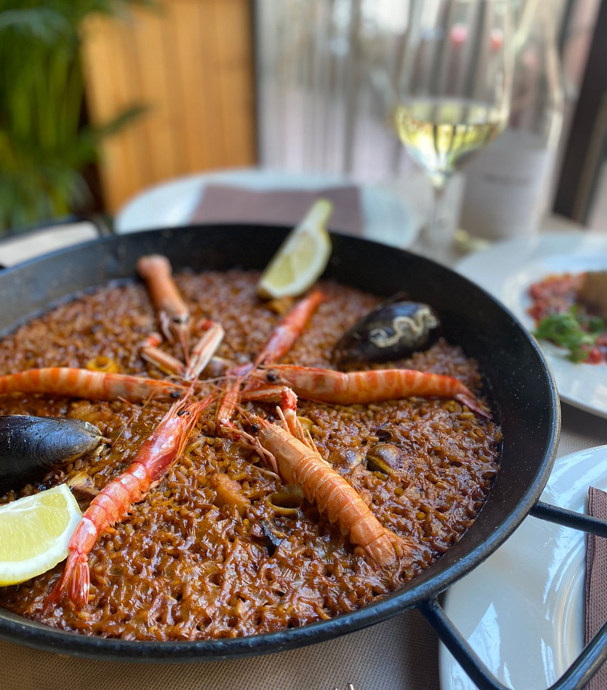

★★★★★
“El mejor arroz del senyoret que he probado en Alicante. Producto fresquísimo y un trato de diez. Volveremos seguro.”
Carmen RiberaMayo 2026
Ver en Google

San Vicente del Raspeig · Alicante
Un restaurante familiar con más de 30 años de historia, donde los productos de cercanía, el trato amable y las recetas tradicionales son los protagonistas.
Lo que dicen nuestros clientes
“El mejor arroz del senyoret que he probado en Alicante. Producto fresquísimo y un trato de diez. Volveremos seguro.”
“Comida casera y de calidad, raciones generosas y precio justo. El arroz a banda estaba espectacular. Muy recomendable.”
“Fuimos en familia y todo perfecto: atención cercana, ambiente tranquilo y unos arroces alicantinos de auténtico lujo.”

Nuestra casa
Somos un restaurante familiar que abrió sus puertas hace más de 30 años, especializado en arroces alicantinos y tapas mediterráneas.
Los productos de cercanía, el trato amable y las recetas tradicionales son los protagonistas de cada mesa. Una experiencia cercana, deliciosa y amable que se siente como estar en casa.
Conoce nuestra esencia
Producto de cercanía
Nuestra pasión por la cocina alicantina nos empuja a buscar y seleccionar los mejores productos de nuestra zona.
Cada plato refleja nuestros valores y cariño: la huerta, el mar y la montaña se unen en recetas que han pasado de generación en generación.
Acerca de nosotrosVisítanos
Portugal, 1 · San Vicente del Raspeig, 03450 Alicante. A 25 minutos en tranvía desde el centro de Alicante.
+34 965 670 550